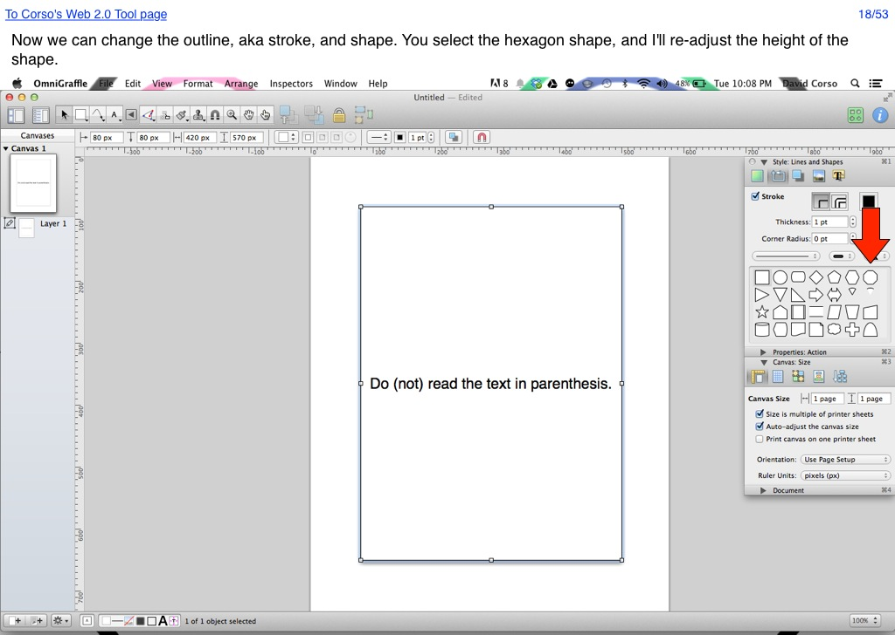

<map name="GraffleExport">
	<area shape=rect coords="5,7,194,24" href="http://66.147.244.111/~immunisg/ET703/CorsoGraphics/Web2.0Tool/WebTool.html">
	<area shape=rect coords="978,7,1017,24" href="53.html">
	<area shape=poly coords="992,308,998,308,1004,313,1004,319,998,325,992,325,987,319,987,313,992,308" href="19.html">
</map>

